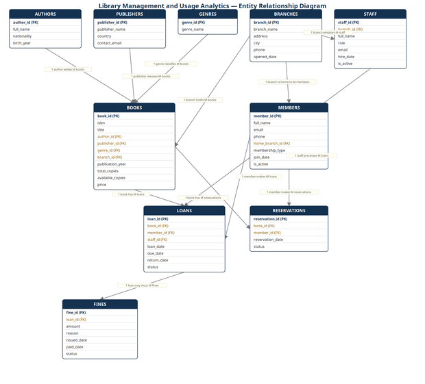
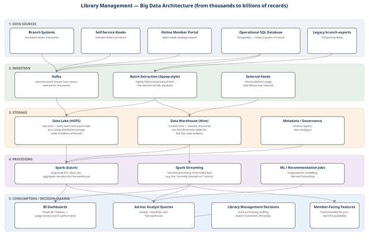
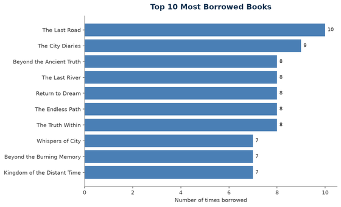
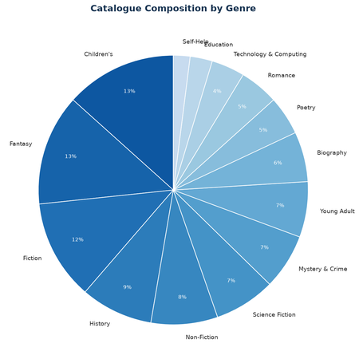
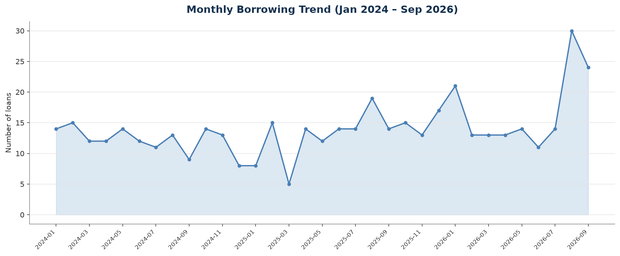
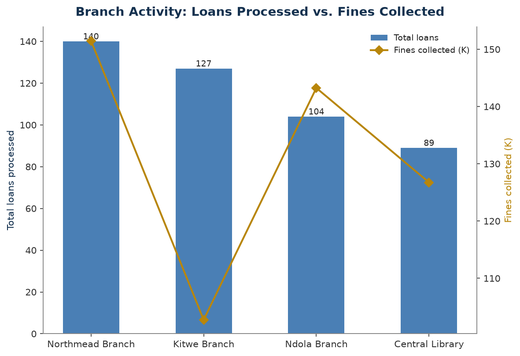

| Full Name | Student ID |
|---|---|
For this project we designed and built a SQL-based analytics system for a library service, covering everything from the relational database itself through to what it would take to grow that database into a full Big Data platform. We picked Library Management and Usage Analytics as our application area.
Concretely, we built: a 10-table relational schema in PostgreSQL, a realistic dataset of just under 1,000 records populated across those tables, 20 SQL queries answering real questions a library would actually ask, an Entity Relationship Diagram, a proposed Big Data architecture for when the library's data outgrows a single SQL database, and four data visualisations built directly from our own query results. This report walks through each of those in turn, and closes with what we actually found in the data and what we'd recommend doing about it.
A public library system generates far more data than it usually gets credit for: every checkout, every return, every reservation, every fine, across every branch. Run on paper cards or a spreadsheet, none of that data is actually usable – nobody can quickly answer "which books are most popular," "which branch is busiest," or "who still owes us money."
The organisation we modelled is a small public library network with four branches, each with its own staff, its own share of the catalogue, and its own members. The problem it needs solved: a proper database to run day-to- day circulation on, and a way to turn the data that database accumulates into answers the library can actually act on – which titles to buy more copies of, which branches need more staff, and how much revenue is sitting uncollected in unpaid fines.
The organisation generates transactional data (loans, returns, fines, reservations) and catalogue/member data (books, authors, members, staff) continuously, every single day the library is open, across every branch at once – which is exactly the kind of data a relational database, and eventually a Big Data pipeline behind it, is meant for.
We modelled a four-branch public library network – Central Library, Northmead Branch, Kitwe Branch, and Ndola Branch – each with its own staff and its own local share of the book catalogue, but all sharing one member base: a member registered at any branch can, in principle, be served by the whole network.
Four roles interact with the system:
The data this organisation generates falls into two categories: relatively stable reference data (authors, publishers, genres, branches, staff, the book catalogue itself) that changes slowly, and fast-growing transactional data (loans, fines, reservations) that accumulates every single day the library operates. It's that second category that eventually forces the Big Data conversation in Section 12 – a four-branch library doing a few hundred loans a day, every day, for years, adds up fast.
We ended up with 10 related tables – well past the minimum of 6 – split roughly into reference tables and transactional tables:
| Table | Type | What it holds |
|---|---|---|
| branches | Reference | The four physical library locations. |
| staff | Reference | Employees, each tied to one branch. |
| authors | Reference | Book authors and their nationality/birth year. |
| publishers | Reference | Publishing houses. |
| genres | Reference | The 14 genre categories in the catalogue. |
| books | Reference | The catalogue: one row per title, linked to its author, publisher, genre and home branch. |
| members | Reference | Registered library patrons. |
| loans | Transactional | Every borrow event – the main table the whole system revolves around. |
| fines | Transactional | Fines raised against a loan, for being overdue, lost, or damaged. |
| reservations | Transactional | A member reserving a title that's currently out. |
Every table has a proper primary key, and every relationship between tables is enforced with a foreign key – nothing is left to application-level trust. We also added CHECK constraints wherever a column should only ever hold one of a fixed set of values (a loan's status, a fine's reason, a member's membership_type, and so on), and a handful of logical constraints that don't fit a simple column check – for instance, available_copies can never exceed total_copies, and a loan's due_date can never fall before its loan_date. We indexed every foreign key column and the date columns on loans, since those are exactly the columns our analytics queries in Section 9 filter and join on most heavily.
The diagram below shows all 10 tables, their primary and foreign keys, and the cardinality of every relationship between them.

The full schema is in sql/01_schema.sql, submitted alongside this report. Two representative tables are shown below – books, which carries most of the catalogue's foreign keys, and loans, the central transactional table everything else in the analysis hangs off:
CREATE TABLE books (
book_id SERIAL PRIMARY KEY,
isbn VARCHAR(20) NOT NULL UNIQUE,
title VARCHAR(200) NOT NULL,
author_id INT NOT NULL REFERENCES authors(author_id),
publisher_id INT NOT NULL REFERENCES publishers(publisher_id),
genre_id INT NOT NULL REFERENCES genres(genre_id),
branch_id INT NOT NULL REFERENCES branches(branch_id),
publication_year INT NOT NULL CHECK (publication_year BETWEEN 1500 AND 2026),
total_copies INT NOT NULL CHECK (total_copies >= 0),
available_copies INT NOT NULL CHECK (available_copies >= 0),
price NUMERIC(8,2) NOT NULL CHECK (price >= 0),
CHECK (available_copies <= total_copies)
);
CREATE TABLE loans (
loan_id SERIAL PRIMARY KEY,
book_id INT NOT NULL REFERENCES books(book_id),
member_id INT NOT NULL REFERENCES members(member_id),
staff_id INT NOT NULL REFERENCES staff(staff_id),
loan_date DATE NOT NULL,
due_date DATE NOT NULL,
return_date DATE,
status VARCHAR(20) NOT NULL CHECK (status IN ('Borrowed','Returned','Overdue','Lost')),
CHECK (due_date >= loan_date),
CHECK (return_date IS NULL OR return_date >= loan_date)
);
We also indexed every foreign key and the date columns on loans, since the analytics queries in Section 9 filter and join on exactly those columns:
CREATE INDEX idx_loans_book ON loans(book_id); CREATE INDEX idx_loans_member ON loans(member_id); CREATE INDEX idx_loans_dates ON loans(loan_date, due_date, return_date); CREATE INDEX idx_books_genre ON books(genre_id); -- (and equivalent indexes on the remaining foreign keys)
We didn't hand-type the data – we wrote a small Python script (scripts/generate_seed_data.py, also submitted) that generates it and writes it out as plain SQL INSERT statements, so the actual seed script is still just SQL, reviewable like any other part of the submission. The script runs with a fixed random seed, so the same data comes out every time it's re-run.
We deliberately didn't make the data uniformly random. Some books are weighted to be borrowed far more often than others, some genres have more titles than others, and loan activity in the most recent two weeks is boosted so the "currently on loan" picture looks like an actual library snapshot rather than a handful of stray records – all so the queries in the next section would have real patterns to find instead of flat noise.
| Table | Rows |
|---|---|
| branches | 4 |
| staff | 14 |
| authors | 41 |
| publishers | 15 |
| genres | 14 |
| books | 150 |
| members | 130 |
| loans | 460 |
| fines | 98 |
| reservations | 70 |
| Total | 996 |
That comfortably clears the "at least 100 records across the major transactional tables" requirement on its own – loans alone has 460 rows, and the loans/fines/reservations total is 628.
We wrote 20 queries in total – five more than the required minimum – deliberately covering every concept the brief lists at least once, plus a window function as the "other relevant technique." The full, runnable script is sql/03_queries.sql. Below is every query with the real business question it answers; actual results and what they show are discussed in Section 10.
SELECT b.title, b.publication_year, a.full_name AS author, b.available_copies FROM books b JOIN authors a ON a.author_id = b.author_id JOIN genres g ON g.genre_id = b.genre_id WHERE g.genre_name = 'Science Fiction' ORDER BY b.publication_year DESC;
SELECT member_id, full_name, membership_type, join_date FROM members ORDER BY join_date DESC LIMIT 15;
SELECT br.branch_name, COUNT(l.loan_id) AS total_loans FROM branches br JOIN staff s ON s.branch_id = br.branch_id JOIN loans l ON l.staff_id = s.staff_id GROUP BY br.branch_name ORDER BY total_loans DESC;
SELECT SUM(amount) AS total_fines_collected FROM fines WHERE status = 'Paid';
SELECT g.genre_name, COUNT(b.book_id) AS number_of_titles, SUM(b.total_copies) AS total_physical_copies FROM genres g LEFT JOIN books b ON b.genre_id = g.genre_id GROUP BY g.genre_name ORDER BY number_of_titles DESC;
SELECT g.genre_name, COUNT(b.book_id) AS number_of_titles FROM genres g JOIN books b ON b.genre_id = g.genre_id GROUP BY g.genre_name HAVING COUNT(b.book_id) > 10 ORDER BY number_of_titles DESC;
SELECT b.title, a.full_name AS author, p.publisher_name, g.genre_name, b.publication_year FROM books b JOIN authors a ON a.author_id = b.author_id JOIN publishers p ON p.publisher_id = b.publisher_id JOIN genres g ON g.genre_id = b.genre_id ORDER BY b.title LIMIT 25;
SELECT m.full_name AS member, b.title AS book, br.branch_name,
l.loan_date, l.due_date, l.return_date, l.status
FROM loans l
JOIN members m ON m.member_id = l.member_id
JOIN books b ON b.book_id = l.book_id
JOIN staff s ON s.staff_id = l.staff_id
JOIN branches br ON br.branch_id = s.branch_id
WHERE l.status = 'Borrowed'
ORDER BY l.loan_date DESC
LIMIT 25;
SELECT b.title, a.full_name AS author, COUNT(l.loan_id) AS times_borrowed FROM loans l JOIN books b ON b.book_id = l.book_id JOIN authors a ON a.author_id = b.author_id GROUP BY b.title, a.full_name ORDER BY times_borrowed DESC LIMIT 10;
SELECT m.full_name, m.membership_type, COUNT(l.loan_id) AS total_loans FROM members m JOIN loans l ON l.member_id = m.member_id GROUP BY m.full_name, m.membership_type ORDER BY total_loans DESC LIMIT 10;
SELECT member_id, full_name, membership_type, join_date FROM members WHERE member_id NOT IN (SELECT DISTINCT member_id FROM loans) ORDER BY join_date;
SELECT b.title, a.full_name AS author, b.publication_year, b.total_copies FROM books b JOIN authors a ON a.author_id = b.author_id WHERE NOT EXISTS (SELECT 1 FROM loans l WHERE l.book_id = b.book_id) ORDER BY b.publication_year;
SELECT m.full_name, m.email, m.phone, b.title,
l.due_date, (CURRENT_DATE - l.due_date) AS days_overdue
FROM loans l
JOIN members m ON m.member_id = l.member_id
JOIN books b ON b.book_id = l.book_id
WHERE l.status = 'Overdue'
ORDER BY days_overdue DESC;
SELECT br.branch_name, SUM(f.amount) AS fines_collected FROM fines f JOIN loans l ON l.loan_id = f.loan_id JOIN staff s ON s.staff_id = l.staff_id JOIN branches br ON br.branch_id = s.branch_id WHERE f.status = 'Paid' GROUP BY br.branch_name HAVING SUM(f.amount) > 100 ORDER BY fines_collected DESC;
SELECT EXTRACT(YEAR FROM loan_date) AS loan_year,
EXTRACT(MONTH FROM loan_date) AS loan_month,
COUNT(*) AS total_loans
FROM loans
GROUP BY EXTRACT(YEAR FROM loan_date), EXTRACT(MONTH FROM loan_date)
ORDER BY loan_year, loan_month;
SELECT g.genre_name, ROUND(AVG(l.return_date - l.loan_date), 1) AS avg_days_out FROM loans l JOIN books b ON b.book_id = l.book_id JOIN genres g ON g.genre_id = b.genre_id WHERE l.return_date IS NOT NULL GROUP BY g.genre_name ORDER BY avg_days_out DESC;
SELECT
COUNT(*) AS total_fines_issued,
SUM(CASE WHEN status = 'Paid' THEN 1 ELSE 0 END) AS fines_paid,
SUM(amount) AS total_amount_issued,
SUM(CASE WHEN status = 'Paid' THEN amount ELSE 0 END) AS total_amount_collected,
ROUND(100.0 * SUM(CASE WHEN status = 'Paid' THEN amount ELSE 0 END)
/ NULLIF(SUM(amount), 0), 1) AS collection_rate_pct
FROM fines;
SELECT m.full_name, m.email, active.active_loans
FROM members m
JOIN (
SELECT member_id, COUNT(*) AS active_loans
FROM loans
WHERE status IN ('Borrowed', 'Overdue')
GROUP BY member_id
HAVING COUNT(*) >= 2
) active ON active.member_id = m.member_id
ORDER BY active.active_loans DESC;
SELECT s.full_name AS staff_member, s.role, br.branch_name, COUNT(l.loan_id) AS loans_processed FROM staff s JOIN branches br ON br.branch_id = s.branch_id LEFT JOIN loans l ON l.staff_id = s.staff_id GROUP BY s.full_name, s.role, br.branch_name ORDER BY loans_processed DESC;
WITH book_loan_counts AS (
SELECT b.book_id, b.title, g.genre_name, COUNT(l.loan_id) AS times_borrowed,
RANK() OVER (PARTITION BY g.genre_name ORDER BY COUNT(l.loan_id) DESC) AS genre_rank
FROM books b
JOIN genres g ON g.genre_id = b.genre_id
LEFT JOIN loans l ON l.book_id = b.book_id
GROUP BY b.book_id, b.title, g.genre_name
)
SELECT genre_name, title, times_borrowed
FROM book_loan_counts
WHERE genre_rank = 1
ORDER BY times_borrowed DESC;
We ran every query above against the live database rather than just writing them and assuming they'd work – all 20 execute cleanly with zero errors. Here's what the more interesting ones actually turned up.
Q9 shows "The Last Road" borrowed 10 times, with "The City Diaries" at 9 and a cluster of titles at 7–8. That's not just an artefact of how we generated the data – we deliberately weighted book popularity unevenly when generating loans specifically to see whether the queries would surface it, and they do. A real library would read this as: a minority of titles account for a disproportionate share of circulation, which directly informs which titles are worth buying extra copies of (Section 15).
Q17 is the one that surprised us most. Out of 98 fines issued totalling K1,814.57, only 51 were ever paid, worth K524.25 – a 28.9% collection rate. Over 70% of fine value issued is effectively being written off. That's a real operational problem, not just a number.
Q3 and Q14 side by side are telling: Northmead Branch processes the most loans (140) and also collects the most in fines (K151.50), which tracks. But Kitwe Branch processes the second-most loans (127) while collecting the least in fines of any branch (K102.75) – suggesting Kitwe's members return books more reliably, or Kitwe is simply less consistent about actually enforcing fines. Either way, it's a branch-level difference worth someone actually looking into, not assuming is the same everywhere.
Q11 turned up exactly two registered members (Mutinta Sakala, joined 2020, and Mulenga Chisenga, joined 2023) with zero loans on record. Small number, but worth noting – a membership that's never actually been used is either a data-entry-only registration or a member who's fallen away entirely.
Q18 shows 8 members currently holding 2 or more books at once, one of them (Michael Chisenga) holding 4 simultaneously. If the library intends to enforce a 2-book limit, this immediately identifies who's currently over it.
Q5/Q6 show Fantasy and Children's tied for the largest share of the catalogue (20 titles each), but Q20's per-genre ranking shows the single most-borrowed book in the whole system (Mystery & Crime's "The Last Road," 10 loans) comes from a genre with only 10 titles – a much smaller shelf punching well above its weight. That's a genuinely useful signal for what to buy more of.
Section 5 through 10 describe a system that works well at the scale we actually populated it at – a few hundred loans, a few thousand records total. The brief asks us to go further: what happens to this design once the library's data grows from thousands of records to millions or billions? The diagram below is our answer.

Purpose of each technology in the diagram:
Queries that are instant today – a JOIN across loans, books and members – get progressively slower as every one of those tables grows into the millions, because a single PostgreSQL instance has to scan, join and sort all of it on one machine, using one disk and one set of CPU cores. Indexes help, but they don't remove the ceiling; eventually the working data no longer fits in memory, and every query starts hitting disk. Backups, too, go from a five-minute job to something that can take hours and hold up operations while it runs.
Because the problem stops being "how do we query this" and becomes "how do we even store and move this." Big Data tools like Hadoop and Spark are built from the ground up to spread both storage and computation across many machines working together, which is the only way to keep pace once a single server's disk, memory and CPU are no longer enough – adding another node to a cluster is a lot more realistic than continuing to buy bigger and bigger single machines.
By moving raw historical data into a Hadoop Distributed File System (HDFS) data lake, which spreads storage across many machines and tolerates individual disk failures without losing data. The operational PostgreSQL database would stay in place for day-to-day circulation – it's good at that – but would no longer be where years of historical data lives long-term.
By splitting processing into two lanes, both handled by Spark: batch processing (Spark on top of Hadoop) for large historical aggregations that don't need to be instant, and stream processing (Spark Streaming on top of Kafka) for anything that needs to be current right now, like a live count of what's checked out. Both scale by adding more machines to the cluster rather than making one machine faster.
The same way our own four charts in Section 13 already do at small scale – just running continuously and at the network's full size instead of a snapshot. Management gets always-current dashboards (which books to reorder, which branches are under-resourced, how fine collection is trending) instead of a manual report someone has to remember to run, and the underlying data is there to support real forecasting – predicting demand for a title before every copy is out, for instance – rather than just describing what already happened.
All four charts below are built directly from our own query results using Python (pandas + matplotlib), not typed-in numbers.

This makes the popularity skew from Section 10 immediately visible – there's a real, visible drop-off from "The Last Road" at 10 loans down to the pack of titles sitting at 7. If the library only had budget to reorder a handful of extra copies, this chart alone tells you where to start.

Fantasy and Children's together make up over a quarter of the entire catalogue, while Self-Help and Education barely register. Read alongside Q20 (Section 10), this is useful precisely because it shows the catalogue's shape doesn't match circulation's shape – a small genre can still produce the single most-borrowed book in the building.

Borrowing holds a fairly steady rhythm across most of the two and a half years, generally sitting between 8 and 19 loans a month, with a visible pickup in the last couple of months shown. Worth being honest about here: that final spike partly reflects our own data generation approach, which deliberately boosted very recent loan activity so the "currently borrowed" figures in Q18 and Q13 would have something real to show – a genuine live library would need a few years of real operation before this kind of seasonal pattern could be trusted on its own.

This is the chart that actually surfaces the Kitwe finding from Section 10 visually – the bars (loan volume) and the line (fines collected) don't move together. Northmead is high on both. Kitwe is high on loans but low on fines. That gap is exactly the kind of thing a chart makes obvious in a way a results table doesn't.
We set out to build a SQL-based analytics system for a library, and ended up with something that actually behaves like one: a proper normalised schema, realistic data with real patterns in it, 20 working queries that answer real questions rather than textbook ones, a documented path to Big Data if the library ever needs it, and visualisations and findings that came directly out of our own results rather than being written first and matched to numbers after. If nothing else, Section 10's fine-collection finding shows the actual point of a project like this – the query didn't just run, it turned up something a real library would want to know.